Low-Code/No-Code C2 Infrastructure For The Lazy Hacker using Microsoft Power Automate
I recently started automating some workflows using Microsoft Power Automate, and immediately I started thinking about all the ways it could be abused.
At the end of this post, I will list some of the attack technique theories that I believe Power Automate will enable.
However, I will dedicate most of this post to a simple, yet capable Power Automate flow I created over a span of roughly an hour (most of it spent on account registration and setup), that shows how easily Power Automate flows can be used to connect an implant to a control-center.
What makes for a good Command-and-Control Infrastructure?
Some of the considerations that come into mind when putting together a C2 infrastructure include:
- Evasiveness: If it is easily detected, it is rendered unusable
- Reliability: Unstable C2 channels can limit what you can do with them
- Resiliency: Being able to fail-over or adapt to changes at either end of the command-and-control channel helps with maximizing dwell-time
- Performance: Bandwidth, throughput, and latency can all affect the capabilities of the implant; File transfer and traffic-tunneling are top two capabilities I've struggled with in the past
- Administrative Burden: Managing domain names, IP addresses, VPSs (or cloud-compute instances), TLS certificates, redirector configurations, and more could be a burden, and that's before you consider the burden of managing a large number of implants
I don't think the technique covered in this post will necessarily result in more capable post-exploit frameworks, but as I will demonstrate shortly, it reduces the effort required to implement a custom implant that is reasonably evasive (at least for its C2 component), performant and manageable.
What is Microsoft Power Automate?
Power Automate is Microsoft's no-code solution that lets non-developers craft automated workflows without having to learn how to code.
Historically, enterprise users used things like Office document macros to automate their work, Power Automate takes it to the next level by removing the coding requirement, and integrating not just with every application in Microsoft 365, but with just about any other RESTful API or HTTP endpoint.
Here are some of the high-level concepts you should know before getting started with Power Automate:
- Flows: Each flow has a trigger (I'll use "Instant cloud flow" for this post, but there are more, such as Automated and Scheduled; Desktop flows allow you to automate workflows on a Windows install). The flow defines what control-flow actions or decisions will be taken as a result of the trigger
- Trigger: Triggers come in many forms, an email being received, or a Teams message being posted in a chat could be some. In this post, I'll use an HTTP request trigger.
- Connector: Connectors are integrations that enable some capability that can be used by an action
- Actions: Actions are executed sequentially (it is possible to execute them in parallel as well), they receive inputs from the previous actions (including the trigger) and pass along their output to subsequent actions
- Action parameters: Each action is different, but typically, actions have parameters (such as the subject of an email for sending an Outlook email message). A static value can be defined, as well as a dynamic input from a previous action; It is also possible to use a 'Power Fx' expression, which is a macro-like scripting language that enables more complex operations on data.
The C2 Architecture
For this PoC, I had a few requirements of my own. such as not having to spend any money, or go through laborious ID verification processes, since after all, a real threat-actor will be detered by that as well.
I was able to register an M365 Free (trial?) account with little hassle, but I had to create an organization account instead of an individual (live.com) account which wouldn't have access to Power Automate.
Teams, however, was a challenge. I've used Power Automate with teams before, and as you would expect, it is a very smooth and seamless integration. Even though Teams is free for individuals, because my account was for an organization, it required a free-trial at the minimum which involved submitting credit card information, as a result I decided to take a different approach.
I looked for existing Slack connectors in Power Automate, and found one. I was also able to register a free Slack account without any issues whatsoever.
The Slack connector has a limitation, however: it doesn't support fetching channel messages.
While the Slack connector's limitation and not wanting to use Teams were annoying, it allowed me to demonstrate an interesting capability: Making RESTful HTTP requests. I used the HTTP connector along with a Slack Bot's API token to fetch commands from the slack channel. I kept the Slack connector to post messages.
Step-by-Step Guide
Without further ado, here are the actions I took to create this little infrastructure.
To get started, navigate to the Power Automate app, and click on "New Flow", and select "Instant cloud flow"
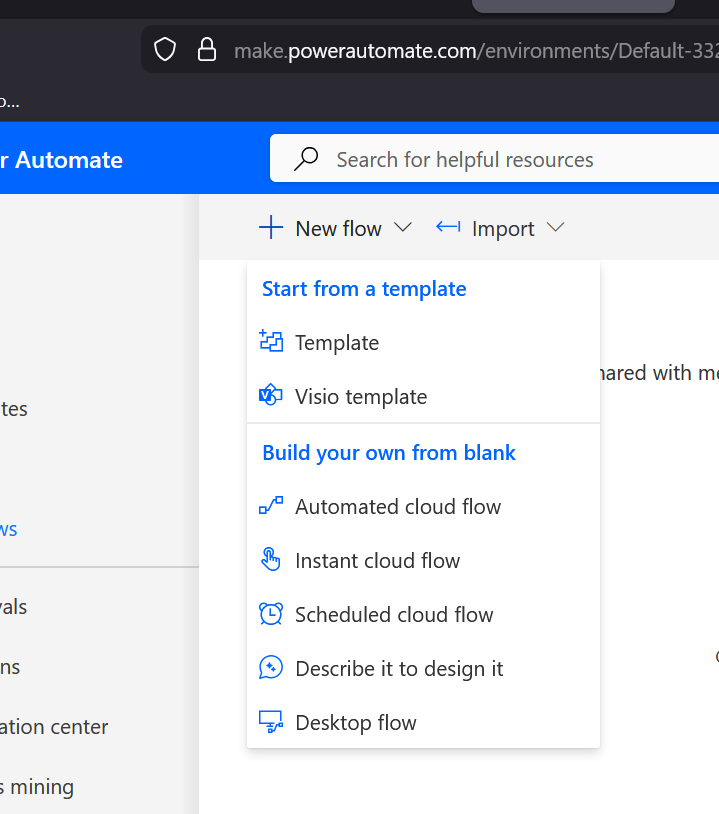
Instant cloud flows are triggered ad-hoc by something, while Automated cloud flows are triggered by some event taking place.
Next, give the instant flow a name, and select the "When an HTTP Request is Received" trigger from the Request connector
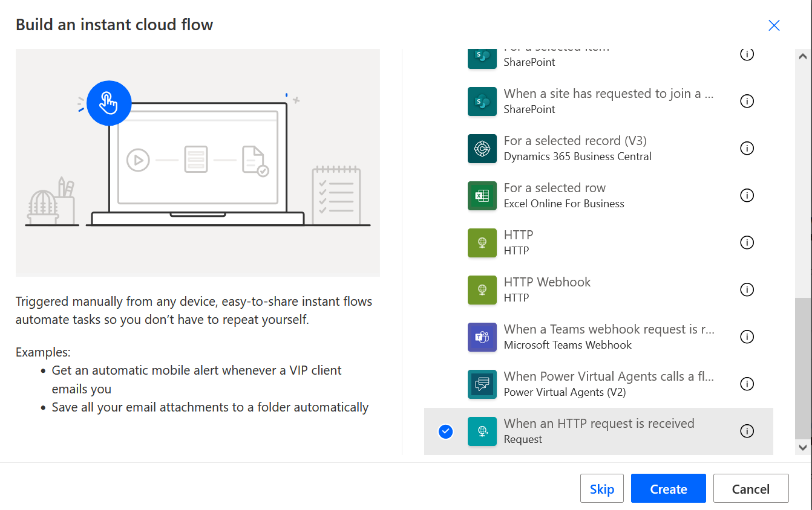
Once you've created the flow, click on the "manual" trigger, which will bring up options to configure the HTTP request parameters for the trigger.
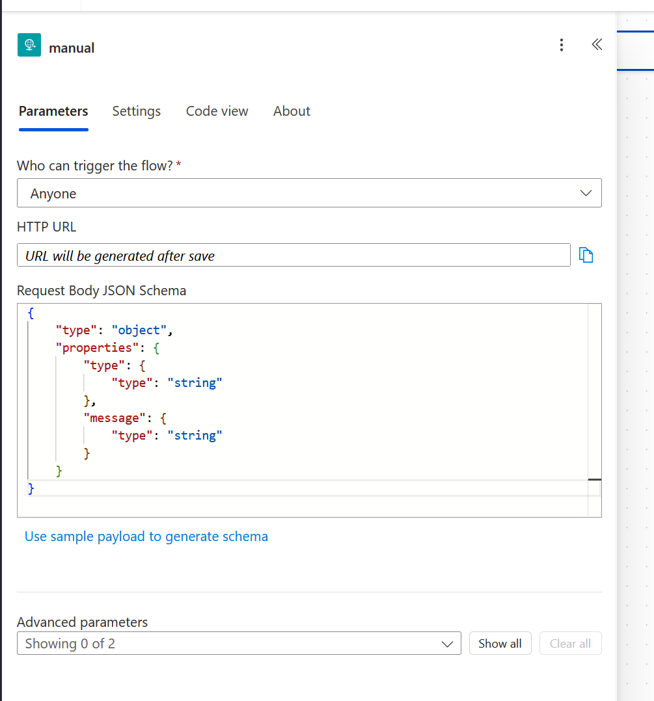
I've selected "Anyone" for the "Who can trigger the flow?" parameter. However, you can add some authentication requirements here (or by checking the parameters of the request at subsequent actions).
The request body JSON schema is best generated by using the "Use sample payload to generate schema" helper. Simply post a sample of the JSON request you're expecting, and it will generate the corresponding schema.
The URL will be generated when you first save the flow. This is the URL the PoC implant will use.
Next, connect an action to the HTTP trigger (I won't repeat this and other repetitive steps for subsequent actions to keep the post brief)
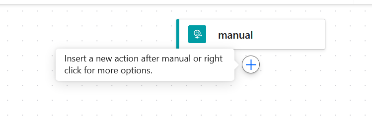
Find the "Control" connector, under "Built-in" tools (which also contain other actions that enable control-flows), and select the "Condition" action.
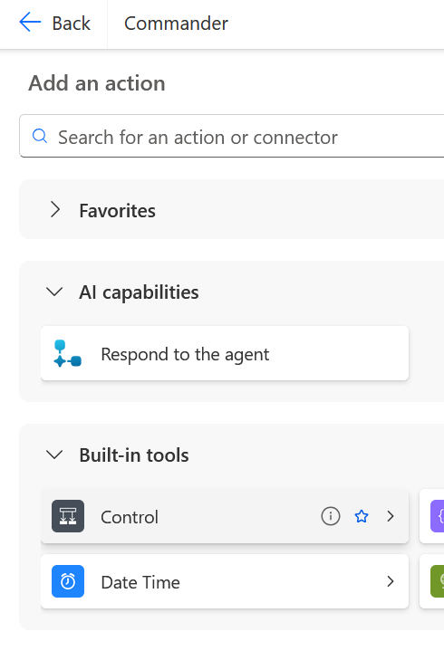
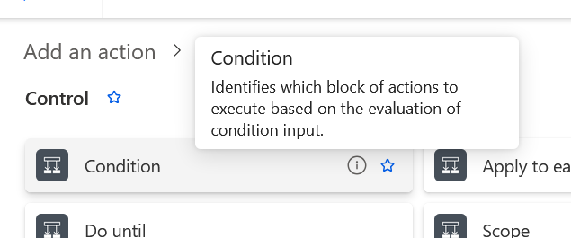
For the condition connector, select a dynamic value by clicking on the lightning icon, and select the "type" parameter from the JSON schema defined previously.
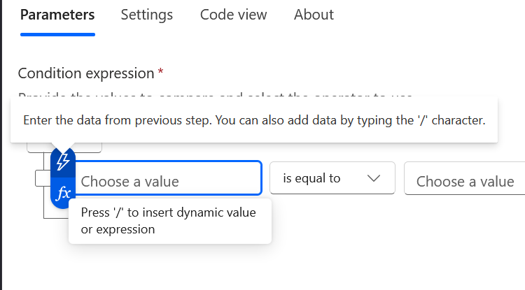
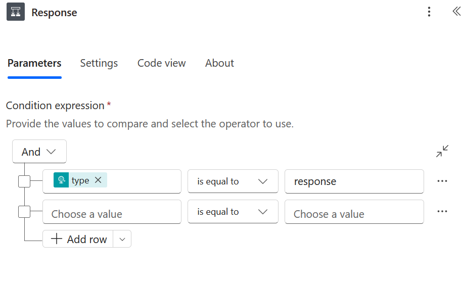
Using the condition action, I'll check if the "type" parameter is set to "response" first, if it isn't I'll check if it is set to "request", for all other values I'll terminate the flow quietly.
"Response" type messages are responses from the implant to some previously submitted request such as running a command. "Requests" are the implant requesting a task, if one is available.
When the response check is true, I added an action "Post message (V2)" using the Slack connector.
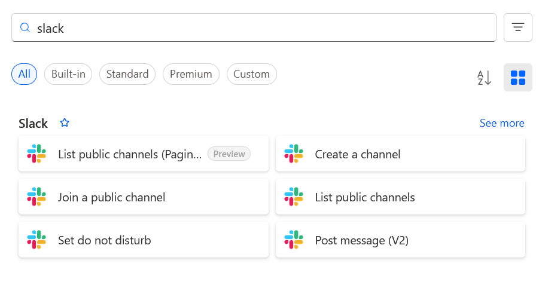
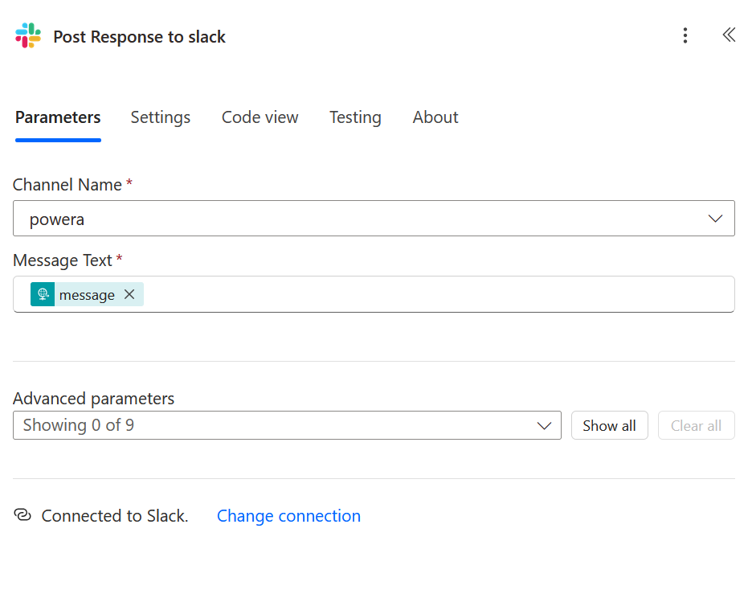
The connector that really makes C2 work, is the HTTP response connector. For response type messages, the flow will use this connector to simply repeat back to the implant the message that was posted to Slack.
It's worth noting that the response action is under the "Request" connector, which made it a bit hard to find at first.
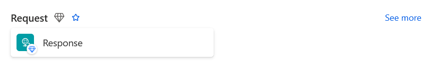
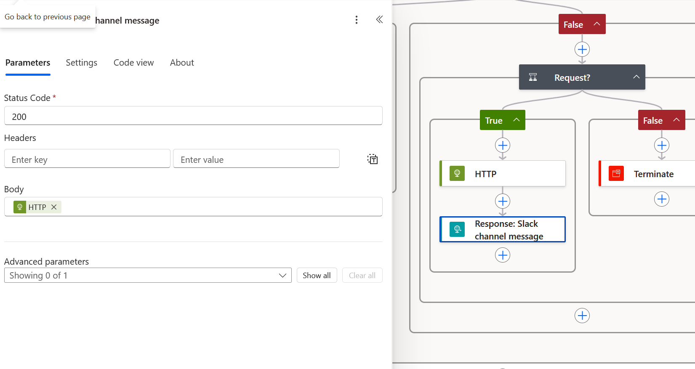
For the request flow, I needed to set up a Slack app/bot, I won't go into the details of that here, but the OAuth token and bot token scopes I've defined are as you can see below:

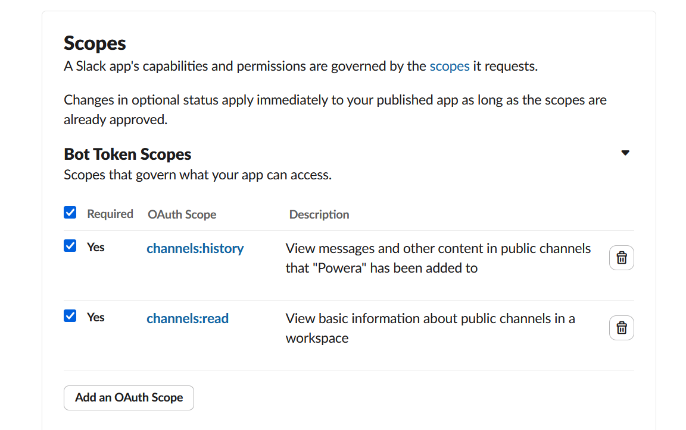
For the request message type, I added an HTTP request action
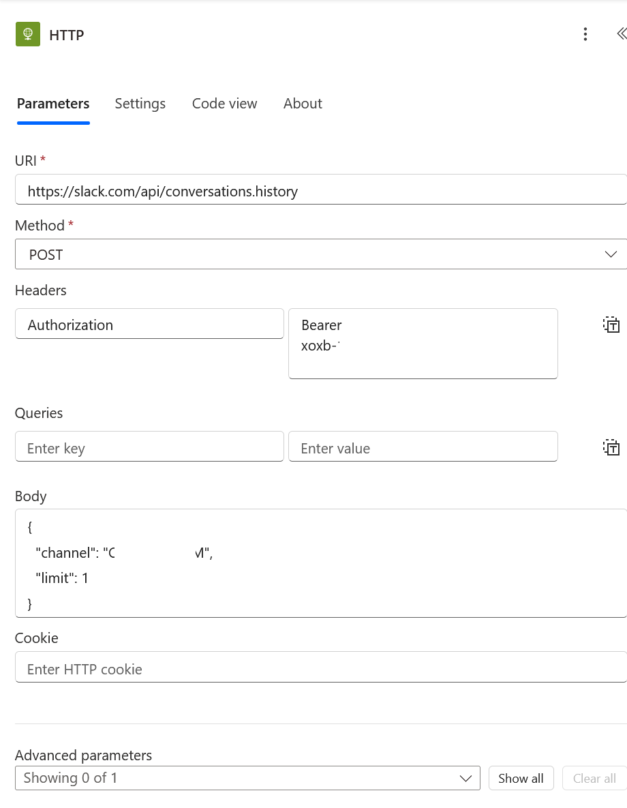
This did require querying the list channels API to get the channel ID. Setting the limit to 1 gets only the latest message, but the PoC implant can handle multiple messages.
The implant finally gets its command by using a Response action (via the Request connector, as mentioned earlier).
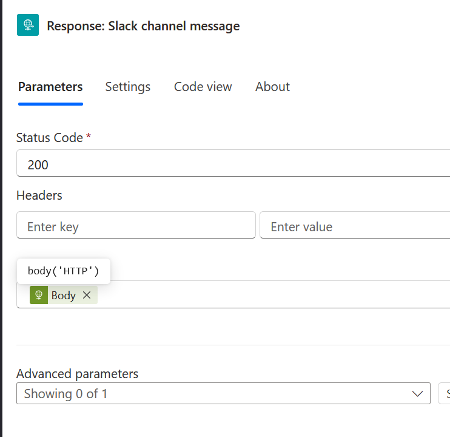
Here is what the final flow looks like:
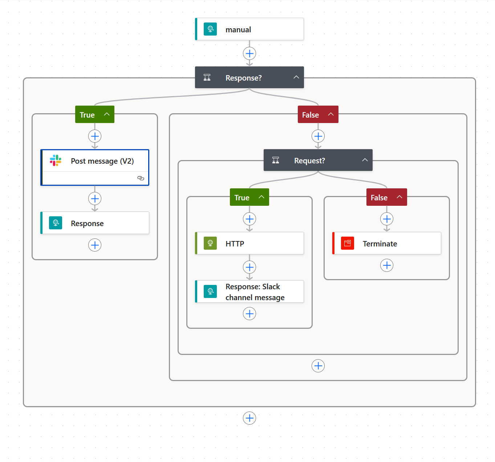
After saving it, be sure to actually turn on the flow:
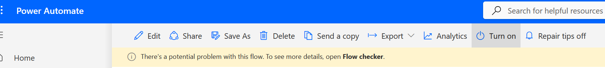
Here is a screenshot from the Slack channel showing the interaction with the implant:
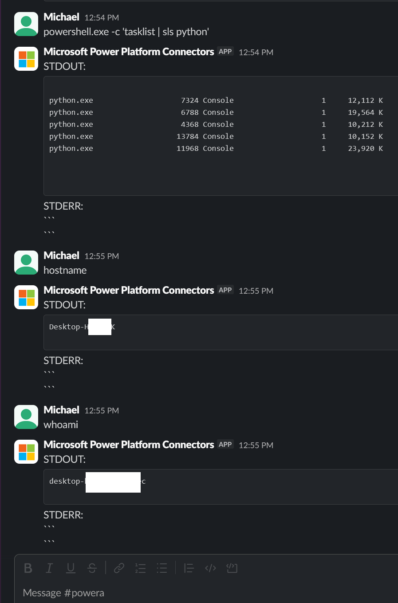
PoC Implant
I have some untested ideas to make even the implant part no-code, but for now I've put together a simple ~40 line Python script to demonstrate the concept.
I plan on doing additional research as time and interest allows, so I've created a repo for it here:
PowerHackOther Thoughts and Ideas
To start with, the command-and-control capability can go far beyond simple process executions.
Some ideas around that:
- Handle file transfer/exfil by using any number of connectors, such as OneDrive, Email and Teams Connectors
- Use Desktop flows to create a complete no-code implant framework
- Commandeer a local Teams install and enable ad-hoc screen-sharing sessions (sounds hard!)
- Use the implant to proxy http requests into the target environment (including protocols like Windows Remoting!)
- Proxy C2 across multiple organizations in case of account take-downs
- Manage implant operators, and redirect the C2 to different control centers as need arises
- Sleep/Wakeup the implant based on a user's Teams status by adding checks in the flow.
More Attack Theory
Data exfiltration and lateral movement are the two areas that might be ripe for attacker misuse. Preventive and defensive measures in M365 alike largely rely on IP addresses and users belonging to the right organization.
For this PoC, I used my own organization, but if I had access to an M365 user account in a target environment, will operations like copying all their files and emails to an external organization's Onedrive, or as demonstrated in this post, an arbitrary HTTP endpoint (Slack, Discord, you name it) be detected or prevented? After all, the requestor is Power Automate; a Microsoft application, in the M365 cloud is performing the operation. The detail of where the data is sent only exists in the flow's definition.
It is possible to implement tenant isolation DLP policies in M365, but I wouldn't presume an organization has them setup sufficiently. And I am not sure if something like an HTTP request connector is detered by this; If outbound access is restricted, so long as an HTTP trigger can be accessed outside of the organization, it is still possible to return the exfiltrated data as a response to the trigger's invocation. The bigger concern is cross-tenant account connections, and I would think it is safe to assume DLP policies might be sufficient to address them.
So, while this C2 PoC is interesting, if I had access to an M365 account as part of a planned RedTeam exercise (or as part of future attack-research) I'll attempt to use my own M365 tenant and accounts to use Power Automate to access and interact with the target M365 user and tenant. Why setup mail forwarding rules when you can setup a Power Automate flow to read the message, mark it unread and send a copy over to an arbitrary destination?
Desktop flows are also very powerful for RPA automation. I don't know how well they work for malware authoring purposes (see links to existing research at the end of this post), but I have a strong suspicion that they will at least enable UI-centric capabilities that a traditional implant would have achieved by running commands that are monitored by EDRs.
Living Off the Cloud
The C2 channel demonstrated in this post isn't all that novel. You could just setup your implant to talk to Slack directly after all. Slack is on the list over at the LOTS project, but Power Automate however isn't. But being able to use a Microsoft-trusted domain for C2 aside, it adds a layer of resiliency. You might have to stop using Slack for some reason some day. And if you use techniques like the CDPTunnel PoC I detailed in a separate post, you can make it look like a user is visiting Power Automate from their browser.
That said, this is an unusual (couldn't find much research/PoC on it) method of using a trusted site for command-and-control. The more interesting advantage is the potential of added capability to the implant by means of Power Automate flows. I think this is only the tip of the iceberg, and further research will show a lot more potential avenues of attack in M365 by using Power Automate.
Finally, thanks for reading this post and let me know of any feedback and suggestions.
I have submitted Power Automate to the LOTS project, so defenders can adapt accordingly.
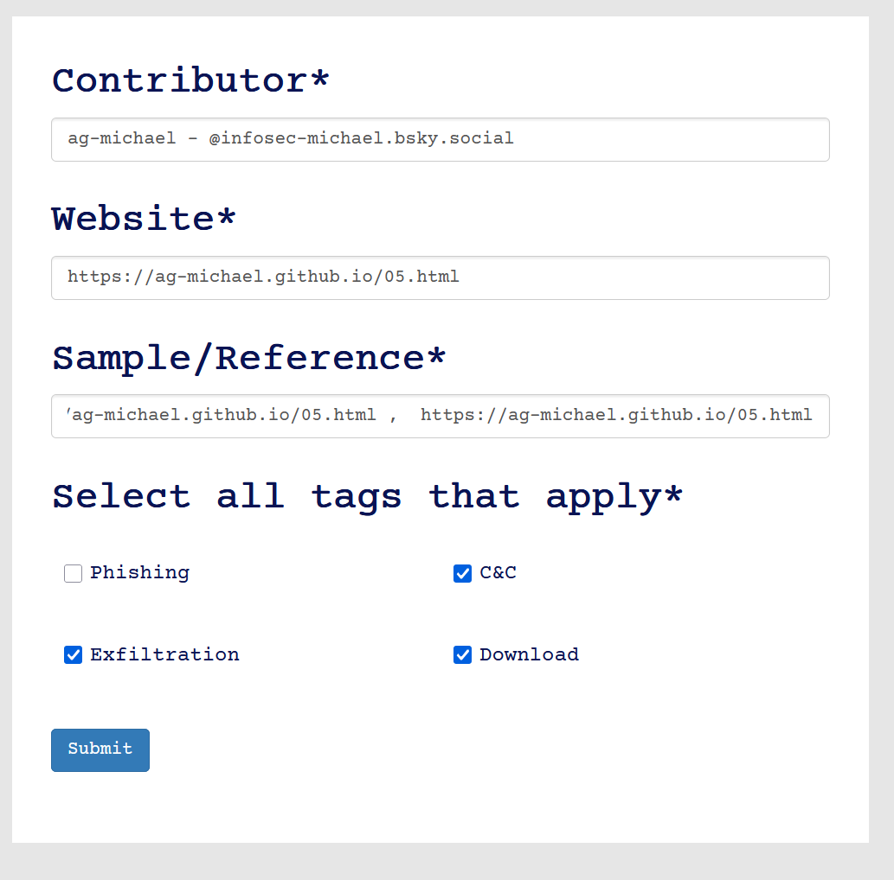
Existing Research
Here are some links to existing attack-research I've found involving Power Automate:
No Code Malware:Windows At Your Service Github repo with additional links for 'No Code Malware:Windows At Your Service' Using Power Automate for Covert Data Exfiltration in Microsoft 365